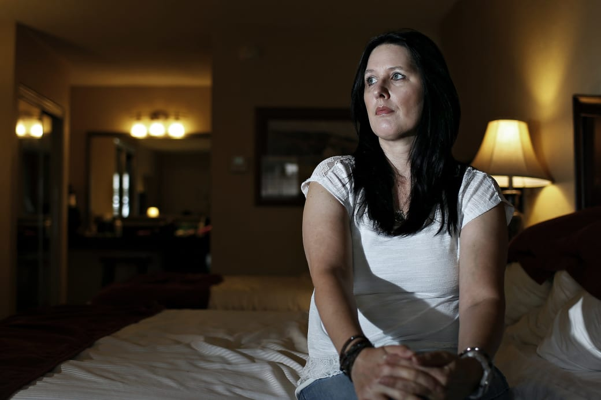

Journal Sentinel
milwaukee | wisconsin
Dee Dee Wanted Her Daughter To Be Sick, Gypsy Wanted Her Mom To Be Murdered
Dee Dee Blancharde was a model parent: a tireless single mom taking care of her gravely ill child. But after Dee Dee was killed, it turned out things weren’t as they appeared — and her daughter Gypsy had never been sick at all.
Michelle Dean

For seven years before the murder, Dee Dee and Gypsy Rose Blancharde lived in a small pink bungalow on West Volunteer Way in Springfield, Missouri. Their neighbors liked them. “’Sweet’ is the word I’d use,” a former friend of Dee Dee’s told me not too long ago. Once you met them, people said, they were impossible to forget.
Dee Dee was 48 years old, originally from Louisiana. She was a large, affable-looking person, which she reinforced by dressing in bright, cheerful colors. She had curly brown hair she liked to hold back with ribbons. People who knew her remember her as generous with her time and, when she could be, generous with money. She could make friends quickly and inspire deep devotion. She did not have a job, but instead served as a full-time caretaker for Gypsy Rose, her teenage daughter.
Gypsy was a tiny thing, perhaps 5 feet tall as far as anyone could guess. She was confined to a wheelchair. Her round face was overwhelmed by a pair of owlish glasses. She was pale and skinny, and her teeth were crumbling and painful. She had a feeding tube. Sometimes Dee Dee had to drag an oxygen tank around with
them, nasal cannula looped around Gypsy’s small ears. Ask about her daughter’s diagnoses, and Dee Dee would reel off a list as long as her arm: chromosomal defects, muscular dystrophy, epilepsy, severe asthma, sleep apnea, eye problems. It had always been this way, Dee Dee said, ever since Gypsy was a baby. She had spent time in neonatal intensive care. She had leukemia as a toddler.
The endless health crises had taken a toll. Gypsy was friendly, talkative even, but her voice was high and childlike. Dee Dee would often remind people that her daughter had brain damage. She had to be homeschooled, because she’d never be able to keep up with other kids. Gypsy had the mind of a child of 7, Dee Dee said. It was important to remember that in dealing with her. She loved princess outfits and dressing up. She wore wigs and hats to cover her small head. A curly, blonde Cinderella number seems to have been her favorite. She’s wearing it in so many photographs of herself with her mother. She was always with her mother.
Their house, like everyone else’s around them, had been built by Habitat
“We are a pair of shoes,”
Gypsy once said.
“Never good without the other.”
for Humanity. It had amenities specially built for Gypsy: a ramp up to the front door, a Jacuzzi tub to help with “my muscles,” Gypsy told a local television station in 2008. Sometimes, on summer nights, Dee Dee would set up a projector to play a movie on the side of her house and the children of the neighborhood, whose parents usually couldn’t afford to send them to a movie theater, came over for a treat. Dee Dee charged for concessions, but it was still cheaper than the local multiplex. The money was to go to Gypsy’s treatments.
Dee Dee became particularly close with some people across the way, a single mother named Amy Pinegar and her four children. Over years of tea and coffee, Dee Dee would tell Pinegar her life story. She was originally from a small town in Louisiana, she said, but she’d had to flee her abusive family with Gypsy. It was her own father, Gypsy’s grandfather, who’d been the last straw; he’d burned Gypsy with cigarettes. So she’d lit out from her hometown for good.
She told Pinegar that Gypsy’s father was a deadbeat, an alcoholic drug abuser who had mocked his daughter’s disabilities, called the Special Olympics a “freak show.” As Pinegar understood it, he’d never sent them a
dime, not even when Dee Dee and Gypsy had lost everything in Hurricane Katrina. It was a blessing that a doctor at a rescue shelter had helped them get to the Ozarks.
Sometimes, listening, Amy Pinegar found herself overwhelmed. “I wondered,” Pinegar told me over the phone last fall, “keeping this child alive… Is she that happy?” All she could do was be a good neighbor and pitch in when she could. She’d drive Dee Dee and Gypsy to the airport for their medical trips to Kansas City, bring them things from Sam’s Club. Ultimately, they did seem happy. They went on charity trips to Disney World, met Miranda Lambert through the Make-a-Wish Foundation. Looking back on it, Pinegar was sometimes even jealous of them.
It was a perfect story for a human interest segment on the evening news: a family living through tragedy and disaster, managing to build a life for themselves in spite of so many obstacles. But the story wasn’t over. One day last June, Dee Dee’s Facebook account posted an update.
“That bitch is dead,” it read.
It was June 14, a hot Sunday afternoon that had driven a lot of people indoors to the blessings of air-conditioning. The first few comments on the status are from friends expressing wild disbelief. Maybe the page had been hacked. Maybe someone should call. Does anyone know where they live? Should someone call the police, give them the address?
As they debated it, a new comment from Dee Dee’s account appeared on the status: “I fucken SLASHED THAT FAT PIG AND RAPED HER SWEET INNOCENT DAUGHTER…HER SCREAM WAS SOOOO FUCKEN LOUD LOL.”
Kim Blanchard, who lived nearby, was among the first to react. Though Kim had a similar last name to the Blanchardes, she wasn’t a relative. She had met Dee Dee and Gypsy in 2009 at a science fiction and fantasy convention held in the Ozarks, where Gypsy could wear costumes and not be particularly out of place.
“They were just perfect,” Kim said. “Here was this poor, sick child who was being taken care of by a wonderful, patient mother who only wanted to help everybody.”
Kim called Dee Dee’s number, but there was no answer. Kim’s husband, David, suggested that they drive on over to the house just to make sure everything was all right. When they arrived, a crowd of worried neighbors was already gathering. Dee Dee and Gypsy had sometimes been unreachable before, off on a medical trip without telling anyone. The windows had a protective film on them; it was hard to see in. Knocking on the doors brought no response. But everyone found it suspicious that Dee Dee’s new cube van, which could easily transport Gypsy
around in her wheelchair, was parked in the driveway.
Kim called 911. The police couldn’t enter the house without a warrant, but didn’t stop David from climbing through a window. Inside, he saw nothing amiss. All the lights had been turned off, and the air-conditioning was on high. There were no signs of a robbery, or any struggle. All of Gypsy’s wheelchairs were still in the house. It was frightening to think about how helpless she might be without them.
The police began taking statements while they waited for a search warrant. Kim relayed information back to Facebook. Yes, they’d been to the house; yes, the police had been called. Dee Dee’s online friends and acquaintances began bombarding Kim with questions. She answered as best she could, but the status was beginning to get shared around Missouri. “Here’s the thing guys…I know everyone is very concerned,” Kim wrote on Facebook. “We need to realize that whoever posted this can read all of this.”
The search warrant didn’t come through until 10:45 that night. The police found Dee Dee’s body in the bedroom. She’d been stabbed, and had been dead for several days. But there was no sign of Gypsy.
The next day, Kim organized a vigil and a GoFundMe account to take care of Dee Dee’s funeral expenses — and possibly Gypsy’s. Everyone feared the worst. All her life, Gypsy had evoked protective responses in people. She was so small and looked so helpless. Many people couldn’t understand why this had happened to her. Who could prey on someone who had no defenses?

“They were
just perfect,”
Kim said.
“Here was
this poor,
sick child
who was
being taken
care of
by a
wonderful,
patient
mother who
only wanted
to help
everybody.”
Kim and David Blanchard in Springfield, Missouri, on June 10, 2016.
Meanwhile, the police were starting to sort things out. A young woman named Aleah Woodmansee had approached them. There were some things she knew, things that might be helpful. For example, she told them, Gypsy had a secret online boyfriend.
Aleah was Amy Pinegar’s daughter, a 23-year-old who’d worked as a medical claims investigator. She felt like a big sister to Gypsy, and evidently Gypsy felt the same. But they were rarely alone together, as Gypsy’s mother was constantly by her side. So when Gypsy confided in Aleah, it was through a secret Facebook account, under the name Emma Rose.
“This is my personal account my mom is still overprotective so she don’t, know about this account,” Gypsy wrote in October 2014. Then she confessed she’d met a man on a Christian singles site. She was in love with him, she told Aleah. Gypsy hadn’t yet told her mother. She wrote that she knew Dee Dee wouldn’t approve, that she wasn’t allowed to date, though she longed to grow up and have a boyfriend like other girls her age.
“In the past I told my mom something mean I says I wished ur mom was my mom instead of my mom cus mrs Amy let Aleah date anyone she wanted so that hurt my mom,” Gypsy wrote.
The new boyfriend’s name, Gypsy revealed, was Nicholas Godejohn. They’d been communicating for over two years. He didn’t care that she was in a wheelchair. And Gypsy planned to marry him. They were both Catholic. They had agreed on names for their children. She was cooking up an elaborate plan for Dee Dee to casually meet Nick at the local movie theater, after which Gypsy was hoping they could be open about their relationship.
This wasn’t the first time Aleah had gotten clandestine messages from Gypsy about boys. She knew that Gypsy had tried to meet men online before, that in spite of what Dee Dee said about Gypsy’s 7-year-old mind, thoughts about romance and sex were taking root anyway. But she was concerned. Gypsy had always seemed naive to her. In October 2014, she wrote “I’m 18. Nick…is 24,” which made Godejohn six years older.
Plus, the way she talked about the relationship was odd. “It was like some kind of magnificent fairy tale was unfolding,” Aleah said over coffee in Springfield last fall.
She was worried, too, about Dee Dee, who’d confronted her in 2011 about her chats with Gypsy, telling her she was corrupting a child. “I’m not going to tell your mom about the things you said,” she told Aleah. “But I
“It was like some kind of magnificent
fairy tale was unfolding.”
don’t want you talking to Gypsy like that.” Dee Dee took away Gypsy’s phone and computer for a time. Gypsy had always managed, nonetheless, to slip through some crack in her mother’s attention, find some other way of getting to Aleah. But the two saw each other less and less, and after the messages about Nick Godejohn in the fall of 2014, Aleah didn’t hear from Gypsy again.
Standing in front of the house half a year later with the crowd that had gathered, it occurred to Aleah that the police should know about all this. She showed them the Facebook messages, and they wrote the name down. The police also put a trace on the Facebook posts to Dee Dee’s account. The IP address was registered to a Nicholas Godejohn in Big Bend, Wisconsin.
On June 15, a team of officers in Waukesha County, Wisconsin, were dispatched to Godejohn’s house. The standoff was brief. Nick quickly surrendered. Luckily enough, Gypsy was with him, unharmed, in excellent health. Relief flooded everyone, at least for a moment. “Things are not always as they appear,” the Springfield sheriff said at a press conference the next morning.
It turned out that, in fact, Gypsy hadn’t used a wheelchair from the moment she left her house a few days earlier. She didn’t need one. She could walk just fine, there was nothing wrong with her muscles, and she had no medication or oxygen tank with her either. Her hair was short and spiky, but she wasn’t bald — her head had simply been shaved, all her life, to make her appear ill. She was well-spoken, if shaken by recent events. The disabled child she’d long been in the eyes of others was nowhere to be found. It was all a fraud, she told the police. All of it. Every last bit. Her mother had made her do it.
“I just cried,” Aleah said, her sheer disbelief about everything that had happened overwhelming her.
Kim Blanchard cried, too. “At that point it really became: ‘I don’t know anything about this person. What have I been believing? How could I have been so stupid?’”
“No one asked for any more documentation. No one raised an eyebrow,” Amy Pinegar told me later. “Were they behind closed doors laughing at us” — she paused for a second — “suckers?”
Dee Dee’s legal name was Clauddine Blanchard. She’d used various aliases and misspellings over the years: DeDe, Claudine, Deno. By the time she reached Missouri, she went by Clauddinnea and always added an “e” to her last name. Not all of her stories turned out to be false. She was, indeed, from Lafourche Parish, in the ball of Louisiana’s foot. She had grown up in a town called Golden Meadow alongside five brothers and sisters, most still living. Her mother died in 1997, but her father is still alive.
So is Rod Blanchard, Gypsy’s father. He still lives in the area, in Cut Off, not far from Golden Meadow. Gypsy has his nose. He has a laconic manner, sometimes stoic, sometimes funny. He met Dee Dee when he was still in high school, and they dated for four to six months. He was 17 to her 24 when she became pregnant, and at the time the only logical thing he thought he could do was marry her. “I woke up on my birthday, on my 18th birthday, and realized I wasn't where I was supposed to be,” he told me recently. “I wasn't in love with her, really. I knew I got married for the wrong reasons.” He left Dee Dee, and though she tried on more than one occasion to get him back, the marriage would not stick.
Gypsy Rose was born shortly after the couple separated, on July 27, 1991. Rod said Dee Dee liked the name Gypsy, and he was a Guns N’ Roses fan. As far as he knows, neither of them knew about Gypsy Rose Lee, the 1920s vaudeville child star turned stripper whose early life was the basis for the Broadway musical Gypsy. That Gypsy had a controlling stage mother too, one who lied about her daughter’s age to make her seem younger, one who kept forcing her daughter to perform even though she didn’t want to.
Gypsy was healthy at birth, Rod said. But when she was 3 months old, Dee Dee became convinced that her baby had sleep apnea, that Gypsy would stop breathing in the night. It was then when Dee Dee began taking her to the hospital. As Rod remembers it, the doctors couldn’t find anything, in spite of three rounds of tests and a sleep monitor. The conviction that Gypsy was a sickly child took hold. She explained the increasingly bewildering array of problems to Rod by saying that Gypsy had a chromosomal defect. Many of Gypsy’s health issues, she claimed, stemmed from that one thing.
It all spiraled so quickly. Dee Dee always had a new idea about what was wrong with Gypsy, a new doctor, a new drug. She had once worked as a nurse’s aide; she had a knack for remembering medical terminology and spitting it back. The information overload acted as a kind of wall around mother and daughter. It always seemed that Dee Dee had things under control. She knew so much, and she was never troubled by questions — she always had an answer.
Rod eventually remarried and had two other children. He and his new wife, Kristy, saw Gypsy often over the first 10 years of her life, and can share pictures from various happy family outings right up until 2004. They remember going to the Special Olympics, too, but have good memories of it. “All smiles,” Kristy said. They have a picture of Gypsy grinning widely with her father and brother there. In all those years, Gypsy never said a word against her mother or anything else.
Meanwhile, Dee Dee’s relationship with her own family, never great to begin with, got worse. The cause isn’t clear. (In spite of repeated attempts to contact her father, Claude Pitre, I was never able to speak to her family directly.) She’d begun to get in trouble with the law, usually for small misdemeanors, like writing bad checks. Eventually, Dee Dee simply moved away, to Slidell, two hours north and kitty-corner to New Orleans across Lake Pontchartrain.
Dee Dee and Gypsy spent their years in Slidell living in public housing and visiting doctors at the Tulane University Hospital and Clinic and the Children’s Hospital. Dee Dee told doctors there that Gypsy had seizures every couple of months, so they put her on anti-seizure medications. Dee Dee insisted to one doctor after another that her daughter had muscular dystrophy even after a muscle biopsy proved she didn’t. There were problems with her eyes and ears, too, Dee Dee insisted, poor vision and frequent ear infections. Doctors dutifully operated on her. If Gypsy had a cold or cough, she was taken to the emergency room.
In 2005, Hurricane Katrina hit Slidell. The power was off for weeks. The pair turned up in a special-needs shelter in Covington, Louisiana, with pictures of their old apartment in rubble. She told the shelter staff she didn’t have Gypsy’s medical records with her because they’d been destroyed in the flood.
One of the doctors at the shelter, Janet Jordan, was from the Ozarks. (She declined to be interviewed for this article.) She was charmed by Gypsy in the shelter: “When I first met her, I had to cry a little bit, and she goes, ‘It’s okay, you're only human.’” Jordan told a local news station in 2005. It was, apparently, she who suggested the Blanchards move to Missouri.
The story of a mother and disabled daughter left without anything proved irresistible to local press. It worked on charities, too. Dee Dee and Gypsy were airlifted to Missouri in September 2005, where they rented a house in Aurora. They lived there until the Habitat for Humanity house on West Volunteer Way in March 2008.
While Gypsy had been involved with charities for children with disabilities from the time she was quite small — Dee Dee often stayed at Ronald McDonald houses — this was obviously the largest benefit Dee Dee had managed to arrange. It seemed to give her an appetite for more. While in Springfield, they’d benefit from free flights from a volunteer pilots organization, stays at a lodge for cancer patients, free trips to Disney World through various charity organizations. (None of the organizations with which the Blanchards had confirmed links returned requests for comment.)
Dee Dee kept Rod updated on his daughter’s whereabouts and medical circumstances. She did this even as she told doctors and new friends in Missouri that he was a drug addict who had abandoned his daughter. Meanwhile, Rod and Kristy spoke to Gypsy pretty often. They always planned to visit, but “for one reason or another, it would never work out,” Rod said.
Rod continued to send, as he always had, $1,200 a month in child support to a New Orleans bank account. He also sent the occasional gifts Dee Dee asked for, television sets, and a Nintendo Wii. He continued to send these things even after Gypsy turned 18, because Dee Dee said Gypsy still required full-time care. “There was never a question whether or not I was going to stop paying,” he said.
There were, occasionally, small signs of deception. When Rod called Gypsy to talk on her 18th birthday, he said, he was excited to make all the jokes dads make to their daughters about becoming an adult. But Dee Dee intercepted the call, he said, to remind him that Gypsy didn’t know her true age. “She thinks she’s 14,” Dee Dee said. She asked that he not upset Gypsy by claiming otherwise. Rod heeded the instruction.
“I think Dee Dee's problem was she started a web of lies, and there was no escaping after,” Rod said. “She got so wound up in it, it was like a tornado got started, and then once she was in so deep that there was no escaping. One lie had to cover another lie, had to cover another lie, and that was her way of life.” They never saw all the local news stories about Dee Dee and Gypsy that had been written and filmed up in Missouri. They knew nothing of any charity drives and trips except what Dee Dee told them, which was very little.
That all changed last June when Rod called Kristy, sobbing in the middle of a workday. Dee Dee’s sister had called him; Dee Dee was dead and Gypsy was missing. “I was in hysterics thinking she got brought somewhere and was left to die,” Kristy said. And if Gypsy was found, she continued, “how could I take care of her when Dee Dee knew everything on how to take care of her?”
The first time Rod saw his daughter walk was in a news report on Gypsy’s arraignment hearing in Wisconsin. No one had prepared them; Kristy had spotted the video on Facebook. Rod was so confused when he saw it that he said his first reaction was, “I was really happy that she was walking.”
When Gypsy’s attorney showed them Dee Dee’s autopsy report, Kristy said she stared for a while at the portion about Dee Dee’s brain. The lawyer asked her why.
“I want to know what the hell was going through her mind,” Kristy said. “What is in that brain of hers that triggered all of this shit?"
Dee Dee won’t ever be able to answer anyone’s questions. All there will be is Gypsy’s story. And Gypsy doesn’t know all of it herself. From the time she was arrested to my more recent talks with her in prison in Missouri, she is confused about details large and small. For example: When she was arrested, Gypsy told the police that she was 19. Rod and Kristy were able to straighten that out by giving authorities Gypsy’s birth certificate. She was actually 23.
Parents make your world, and Dee Dee made Gypsy’s into one where she did, indeed, have cancer. Gypsy told me her mother said some of the medications were related to it. Even as she grew older, she wasn’t sure how to question it. There are lingering questions, in fact, about exactly what medications Gypsy was given over the years. Some of them may never have been prescribed to Gypsy at all; her attorney, for example, suspects Dee Dee gave Gypsy some kind of tranquilizer.
The pile of bogus diagnoses, the confusing lists of drugs: It all points to a syndrome called Munchausen by proxy. Munchausen syndrome was first identified by a British psychiatrist named Richard Asher in 1951. A successor, Roy Meadow, identified Munchausen by proxy in 1977. It has been in the DSM, the diagnostic manual used by psychiatrists, since 1980. (In the latest version, the DSM-V, it goes by the name “factitious disorder,” but for clarity’s sake I’ll stick to the Munchausen nomenclature.) In short, a person with the syndrome either feigns or induces physical and psychological symptoms for no obvious benefit other than attention and sympathy. If the person does this to themselves, it’s plain Munchausen syndrome; when the symptoms are feigned or induced in others, it’s called Munchausen by proxy. The DSM-V recommends distinguishing Munchausen syndrome from what is called “malingering,” that is, faking or inducing symptoms of illness where there is some hope of material benefit. Malingering isn’t considered to be a mental illness. It’s just plain fraud.
While most with the syndrome are mothers, there are also documented cases of fathers doing this to their children, husbands doing this to their wives, nieces doing this to their aunts. And doctors often don’t detect it for months or years. In fact, it’s difficult to say just how prevalent Munchausen is in the general population. By its very nature, it hides in plain sight.
That doctors often miss Munchausen seems counterintuitive, but the doctor-patient relationship is a bond of trust that goes both ways. “As health care providers,” said Caroline Burton, a doctor at the Mayo Clinic in Florida who’s treated cases of Munchausen where the proxy is an adult, “we rely on what a patient tells us.” Even if a doctor suspects his or her patient is lying, there isn’t much incentive to refuse treatment based on the doubt. What if the doctor is wrong and the patient suffers for it? “You have to be careful not to overlook organic disease,” Burton said. “You’ve really gotta go through quite a lot of diagnostic hurdles.”
A diagnosis of Munchausen syndrome by proxy is attached to the perpetrator, not to the victim. Because Dee Dee is dead, it’s impossible to diagnose her. She didn’t leave behind a diary or some other documentation of her intentions. She did keep a binder of medical information in which she seemed to be sorting through the different information she'd given to various doctors. And she did fit certain parameters that doctors often cite as red flags for Munchausen syndrome: For example, she had some medical training. The number of doctors she took Gypsy to see over the years, and her propensity for changing locations so there was no clear medical trail, is also common. So are the concerns over sleep apnea, which is one way Munchausen often seems to begin in the various documented cases.
It is also not unusual, as Burton told me, for extended family members — and even sometimes immediate ones — to be totally unaware of the feigning of illness. “The perpetrators are very intelligent people,” she said. “They know how to manipulate other people.”
They manipulate their victims, too, and the longer it goes on, the higher the chances are that the actual patient might collude with the perpetrator. The desire to please a parent can be enough to enlist a child in the deception. But even in adult cases, there can be some kind of emotional attachment keeping the patient in on the lie. “The relationship that develops between the two is so unhealthy,” Burton told me, of the adult cases she had treated. And no source I consulted had ever heard of a case where the abuse went on for this long, into their adulthood. One thing seems certain: For the patient in a Munchausen by proxy case, the truth becomes corroded.
Gypsy’s medical records are sobering. All the way back in 2001, doctors at Tulane University Hospital tested Gypsy for muscular dystrophy. Her tests came back negative. In fact, all scans of her brain and spine were relatively clear. The records of all those tests survived Katrina. Nonetheless, Dee Dee continued to insist to doctor after doctor in Louisiana and Missouri that Gypsy had muscular dystrophy. Most doctors appear from these records to have taken her assertion at face value and didn’t probe. Instead they proceeded to treat Gypsy for various vision, hearing, sleep, and salivation problems that were presumed to flow from the muscular dystrophy. (The records I reviewed for this article appeared to cover only some of Gypsy’s care. It’s impossible to say how many other relevant records might exist.)
Some interventions were surgical. Gypsy’s eye muscles were repeatedly operated on for alleged weakness. Tubes were put in her ears for alleged ear infections. She was given a feeding tube and ate very little by mouth, surviving on cans of the meal replacement PediaSure well into her twenties. Her salivary glands were first injected with Botox, then removed because her mother complained that she drooled too much. Gypsy’s teeth rotted out and had to be extracted, though whether that was because of poor dental hygiene or a mixture of medications and severe malnutrition, it's hard to say.
The repeated invasions of Gypsy’s body in the name of these illnesses she turned out not to have were, in short, serious and prolonged. It is difficult to say now whether any of it was medically needed at all. What is not difficult to say is that all of it began when Gypsy was impossibly young and could hardly have been expected to challenge authority figures — her mother or her doctors — about how she was feeling.
For their part, doctors did not pick up on innumerable hints that Dee Dee’s stories did not add up — not even the sleep doctor, Robert Beckerman, who saw Gypsy both in New Orleans and in Kansas City. Instead he featured his treatment of Gypsy in the hospital newsletter and mentioned repeatedly in the medical files that she and Dee Dee were his “favorite mother, daughter patient.” (Beckerman did not reply to requests for comment for this story.)
"Doctors did not pick up on innumerable hints that Dee Dee's stories did not add up."
There was one exception. In 2007, a pediatric neurologist named Bernardo Flasterstein, consulting on the case in Springfield, became suspicious. In a recent phone conversation, Flasterstein told me he had his doubts from the first time he saw Dee Dee and Gypsy. Dee Dee’s stories about Gypsy’s myriad illnesses didn’t fly with him. In his notes to Gypsy’s primary care doctor after the first visit, he wrote, in bold, underlined type, “The mother is not a good historian.”
There was an “unusual distribution” to Gypsy’s weakness for a muscular dystrophy patient, he wrote in his notes. Still, Flasterstein says, he gave the case the “benefit of the doubt” and sent Gypsy for all the usual tests, the MRIs and the blood work. It all came back normal. “I remember having her stand up,” he told me, “and she could hold her own weight!” He said he told Dee Dee, “I don’t see any reason why she doesn’t walk.”
In between his visits with Gypsy, Flasterstein tracked down a doctor who had seen Gypsy in New Orleans. That doctor told him that the muscle biopsy in New Orleans had been negative for muscular dystrophy, and that Gypsy’s previous neurologist had explained that to Dee Dee. When confronted with the problem, Dee Dee simply stopped seeing those New Orleans doctors.
“Analyzing all the facts, and after talking to her previous pediatrician,” Flasterstein wrote in the file, “there is a strong possibility of Munchausen by proxy, with maybe some underlying unknown etiology to explain for her symptoms.” Dee Dee stopped seeing him after that visit. “I assume she got my notes,” Flasterstein says. He said nurses told him later that on the way out of his office on that last visit, Dee Dee was complaining that he didn’t know what he was talking about.
Flasterstein never followed up. He told me that in the network of Springfield doctors Dee Dee saw, “everyone bought their story.” He remembers being told to treat the pair with “golden gloves.” He says he thought that if he reported it to social services, they wouldn’t believe him either.
Thinking about it now, Flasterstein regrets not doing more. He says this was only the second case of Munchausen he’d seen in his decades-long career. He heard about the murder when a former nurse in his office wrote him about it last year. “Poor Gypsy,” he told me. “She suffered all those years, and for no reason.” He wishes he “could have been more aggressive.”
It was not the only missed opportunity for authorities to intervene. In the fall of 2009, someone made an anonymous call to the Springfield Police Department, asking for a wellness check. The person said that they had doubts that Gypsy was suffering from all the ailments her mother described. (Flasterstein says it was not he who made that call.) The police drove over to the house, but Dee Dee put their fears to rest. She told them that the reason she sometimes used inconsistent birth dates and spellings of her name was to hide from an abusive husband. No one called Rod Blanchard, or checked on these claims. The police accepted the explanation. Gypsy “does suffer from some type of mental handicap,” they wrote in their report. The file was closed.
Gypsy also tried, once, to escape her mother. She met a man at the science fiction convention that Kim Blanchard and her husband also attended. Gypsy and this man began communicating online. At the time, in February 2011, Gypsy and Dee Dee were leaving everyone with the impression that she was 15. (She was actually 19.) According to Kim, the man in question was 35. He took Gypsy back to his hotel room. Through conventioneer intelligence — “We were all overprotective of her,” Kim Blanchard said — Dee Dee found them. She apparently knocked on the hotel room door with papers that showed Gypsy was a minor, and the man let Gypsy leave. (He could not be reached for comment.)
After that incident, Dee Dee was furious to the point of public spectacle. She smashed the family computer with a hammer, cursed the internet to her friends. When she eventually replaced it, Gypsy was allowed to use the internet only with Dee Dee’s supervision. And for months afterward, Kim Blanchard said, Gypsy was subdued, though “she wasn't acting any differently than a normal child who was in trouble at that point.”
The whole situation has left bystanders in Springfield with feelings of guilt. “I just wish she would have come to me,” Aleah Woodmansee told me. A lot of people feel that way. If Gypsy had, just once, stood up and walked across the room, the spell would have been broken. But plainly it wasn’t that easy for her. In a way, that makes sense. She slipped, as people are fond of saying, through just about everyone’s cracks. She had no reason to believe that her life would change. Until, apparently, she met Nick Godejohn.

Under other circumstances, a tale of child abuse as long and as involved as what Gypsy experienced might have inspired public sympathy. But something about the fraud element deeply offended people, particularly those who hadn’t known Gypsy or Dee Dee at all. Evidently there are a lot of people who are worried that others who are sick and disabled don’t deserve their generosity. So Facebook groups began to spring up. They splintered on whether Gypsy could be said to be blamed, whether Rod and Kristy were in some way in on the fraud. Some groups ballooned to over 10,000 members, some of them posting every day about the crime, voicing unfounded theories about what had happened.
If their speculation had been confined to private forums, it might have been one thing. But more than a few of these amateur detectives were not satisfied with online discussion. They wanted to affect the case in real time. A St. Louis–based Thought Catalog writer named Meagan Pack was keeping track of “tips” she’d gotten from Facebook about Gypsy and Dee Dee’s crimes and posting them to a much-referenced post. Pack told me she called the police detective to inform him of all she’d learned. Random observers on Facebook also called the police with their various speculations. Then, when the court hearings began, they came to those, too. One even showed up to Dee Dee’s house when the initial “That bitch is dead” Facebook post went viral in Springfield. She hadn’t known Gypsy or Dee Dee at all. She was shooed away from the crime scene by the neighbors and the police.
The result was informational chaos. Kim Blanchard’s GoFundMe became a flashpoint for online sleuths. When Dee Dee's financial fraud was revealed by the sheriff, Kim shut it down, but not before the groups had taken it upon themselves to investigate Kim herself. Several thought Kim and David Blanchard were lying about their involvement with Gypsy and Dee Dee, and assumed they were relatives because of their last name.
Kristy Blanchard, meanwhile, was still gathering a lot of the news about her stepdaughter from Facebook. That’s when she discovered that many thought she and Rod were in on Dee Dee’s plans. Others thought Rod must have been a neglectful father who didn’t financially support his own child. "They don't understand that I've always been supportive,” he said. “In every way,” Kristy chimed in. In fact, if anything, Dee Dee may have had so much money — Gypsy and Nick had escaped with about $4,000 from Dee Dee’s safe — because they were receiving his support checks. (Dee Dee died intestate, without a will, and apparently without meaningful assets other than that cash.)
Kristy tried, at first, to defend herself and Rod to these groups, but it turned out they were hard to convince. “It was hell,” she said. She withdrew from all the groups and asked friends and family to stop accepting new friend requests, which were pouring in.
The neighbors in Springfield also had this problem. “It was like, ‘Forget you!’” Amy Pinegar said of the few attempts she made to correct the online sleuths on their factual errors. The obsessives ended up piling confusion onto the already confusing situation Dee Dee had created. And they proved quite resilient. At the hearing I attended in September 2015, two people from the largest Facebook group were there. After the hearing, they made a beeline for the local television crew and started talking to them. Gypsy’s attorney, Michael Stanfield, saw them too, and tried to hurry out of the courtroom to confront them.
“Who were those people?” he asked the television crew. “What did they say?”
For a while, it seemed like Gypsy’s case would, eventually, go to trial. The prosecutor declined to go for the death penalty, but both Gypsy and Nick were charged with first-degree murder. As the investigation into the crime continued, it turned up text messages between the two that appeared to discuss and plan Dee Dee’s death. “Honey, you forget I am ruthless, and my hatred of her will force her to die,” Godejohn texted Gypsy. “It’s my evil side doing it. He won’t mess up, because he enjoys killing.” Prosecutors also said they found social media evidence of Gypsy directly asking Godejohn to kill her mother, though these have never been made public. Documents from pretrial discovery show him telling a friend about Gypsy’s desire to murder her mother as early as May 2014.
Godejohn referred to his “evil side” because he and Gypsy had constructed an elaborate online fantasy life, mostly through a jigsaw puzzle of Facebook accounts. They were into BDSM imagery. They had specific names and roles for each other. They took pictures of themselves in costumes, Gypsy dressing up at one point as the comic book character Harley Quinn, posing with a knife. Reality and fantasy blended quite a lot, for both of them. Even now, it’s not clear why Godejohn participated in this scheme. He had no history of violence. (Reached by telephone, Godejohn’s attorney Andrew Mead declined to comment on the case.) His only prior arrest was for lewd conduct in 2013 at a McDonald's, where he had been watching pornography on a tablet. But both he and Gypsy told police he was the one to wield the knife. She said that while her mother was being stabbed, she was in the other room, listening. One of the taxi drivers who’d carted the pair around Springfield after the murder told interviewers they thought Gypsy was the ringleader.
Gypsy’s attorney, Michael Stanfield, is a public defender. In an average year, he told me, he handles over 270 individual cases. He drew Gypsy’s case at random and had no idea what he was in for. “I think this is probably the most complicated case I’ll ever get,” he said. The Greene County public defender’s office was somewhat lucky, in that they were also able to pull a former leading public defender, Clate Baker, out of retirement for the case. Stanfield also had an investigator and a paralegal working on it. Kristy and Rod had no money to hire a private attorney, though they told me repeatedly as I reported this story that they would never have told Gypsy to switch attorneys because they found Stanfield so capable and reassuring.
The process of figuring out what had happened was, in a word, complex. Stanfield went down to Louisiana and dredged up some elements of Dee Dee’s past. It took him months to get Gypsy’s own medical records, because Dee Dee had set up a power of attorney over Gypsy’s medical decisions after Gypsy turned 18. The hospitals refused to help, even though the power of attorney did not surrender Gypsy’s rights to look at her own medical documents.
When the records finally arrived, though, they were so damning, Stanfield called the prosecutor without needing to investigate further. A plea deal was worked out. On July 5, Gypsy pleaded guilty to second-degree murder. The judge gave her the minimum sentence: 10 years. With the year she’s served, she’ll be eligible for parole in about seven and a half years, at the end of 2023. By then she will be 32 years old.
For his part, Godejohn is still scheduled for trial in November. It was not, Stanfield told me, a listed condition of Gypsy’s plea bargain that she testify against him. At a recent hearing in mid-July, he looked bewildered and lost, a beard concealing most of his face. His family never seems to come to hearings.
Gypsy is now an inmate being processed at the Women's Eastern Reception, Diagnostic and Correctional Center in Vandalia, Missouri. Her hair is long, her skin clear and healthy, and she wears proper adult glasses. She’s off all her medications, and there have been no health problems in the year she’s been out of her mother’s control. “Most of my clients lose weight in prison,” Stanfield pointed out, because the food is so bad. Gypsy gained 14 pounds in the 12 months she spent in Greene County Jail before her plea.
Kim Blanchard, who visited Gypsy once in jail, told me, “She looked much more like the person that she was, which was the complete opposite of the person that I knew, and it was like she had a costume on that whole time and then took it off.”
But obviously, there are lingering effects. When I last checked her inmate record, it still had her last name misspelled, bearing the extra “e” that her mother somehow thought was a good disguise. In the Greene County Jail, Gypsy had a therapist she saw once a week. It remains to be seen if she’ll have one in her new home, or if that therapist will be trained to attend to the specifics of her unique situation.
"It was like she had a costume on that whole time and then took it off.”
Rod and Kristy saw Gypsy not too long after the plea bargain. It has been a relief to know what’s going to happen to her. They don’t know if they’re going to sue the hospitals or doctors that Gypsy saw all her life. They’ll decide that after everything has settled down, after they can properly talk to Gypsy. While the case was pending, they never discussed the crime with her; the prosecutor forbade it. Now there will be more to talk about. They’re hoping to get up to her new facility two or three times a year. It’s a long drive, and there’s still the matter of money.
Months ago, Rod and Kristy told me they still catch Gypsy in small lies about her life, things she’s clearly afraid to be frank with them about. It worries them. “Of course we want her to get better about that,” Kristy said.
When I spoke to them more recently, Rod’s voice was sagging a little. He sounded older. He said he’d started to wonder what exactly Dee Dee had told Gypsy about him all those years. He had only begun to pose those questions. He was wondering lately, he said, how Dee Dee had managed to be so friendly on the phone all those years if she hated him so much. He asked Gypsy about it.
“She said, ‘Keep your enemies close,’” Gypsy told him.
For most of the year I spent reporting this article, the case was pending and I wasn’t able to speak to Gypsy herself. After the plea deal, that changed. I sent her a note. She called me from prison in Missouri to talk in short conversations broken up over a few days.
Her voice is still high-pitched, though now that we know what we know, it no longer seems unusually high at all. People heard what they wanted to. Gypsy speaks in long, beautiful sentences. She is sometimes so eloquent in conversation that it is hard to believe anyone could have ever spoken with her and thought her “slow,” as some put it. It reminded me of all the doctors who wrote in her files that in spite of Gypsy’s alleged cognitive defect, she had a “rich vocabulary.”
She was eager to talk, barely able to contain herself once she started. She wants people to know, she said, that this wasn’t a situation where a girl killed her mom to be with her boyfriend. This was a situation, she said, of a girl trying to escape abuse. In prison she’s hoping to join all sorts of programs, to help people. She wants to write a book to help others in her situation.
I asked her what I’d long been waiting to ask her: When did she realize her life was different, that there was something wrong? “Whenever I was 19,” she said. She meant the time when she ran away with the man at the convention in 2011. When her mother came to take her back, she began to wonder why she wasn’t allowed to be alone, to have friends.
About her mother, her opinion seems to waver. “The doctors thought that she was so devoted and caring,” Gypsy said.
“I think she would have been the perfect mom for someone that actually was sick. But I’m not sick. There’s that big, big difference.”
Gypsy still doesn’t feel she actively deceived anyone. “I feel like I was just as used as everybody else,” she said. “She used me as a pawn. I was in the dark about it. The only thing I knew was that I could walk, and that I could eat. As for everything else… Well, she’d shave my hair off. And she’d say, ‘It’s gonna fall out anyway, so let’s keep it nice and neat!’” Gypsy said her mother told her she had cancer, too, and would tell her that her medication was cancer medication. She just accepted it.
As for a childlike demeanor, Gypsy grew defensive when I asked her about it. “It’s not my fault. I can’t help it. This is my voice.”
Often, it didn’t occur to her to question any of it, and when it did, she worried about hurting her mother’s feelings. It often seems to Gypsy, even now, that Dee Dee really thought she was sick. “I was afraid that we were gonna get in trouble,” Gypsy said. “The line between right and wrong…was kinda blurred, ’cause that’s the way I was taught. I just grew up that way.”
“When I think about it now,” she added, “I wish I would have reached out to somebody and told somebody before I told Nick.”
She mostly used the internet late at night, when her mother was asleep. Nick, she said, was the first person who had offered her real protection. She believed him. Ultimately, after everything that happened, she said she thinks he has “anger issues.” She repeatedly takes responsibility for the murder: “What I did was wrong. I’ll have to live with it.” But she said Nick is the one who took “a plot between us both” and “made it into action.” Gypsy was the one who had the idea to post about the murder on Facebook, so that the police would come check on her mom. She recalled asking Nick, “Can we please just post something on Facebook, something alarming, that would make people call the police?” But she said he told her what to write.
I asked, repeatedly: Are you angry? With your mom? With the doctors? She will admit only to frustration. “It makes me frustrated that none of the other doctors could see that I was perfectly healthy. That my legs were not skinny, like someone who was [really] paralyzed. That I can’t... I don’t need a feeding tube. Stuff like that.” In jail, Gypsy had access to tablet computers. She looked up the definition of Munchausen, after hearing the word so often used to describe her situation. Her mother matched every symptom, she told me.
Every once in a while, I’d get Gypsy explaining some element of her abuse in such detail that something in me would break. Once, feeling speechless but aware that the clock was ticking on her phone time, I blurted out, “I’m so sorry this happened to you.” Gypsy immediately switched into the girl she was back in those feel-good local news interviews. “It’s okay. I mean, honestly, it’s made me a stronger person, because I truly believe that everything happens for a reason.”
Even on the subject of her prison sentence, Gypsy is a model of radical acceptance. She’s told people she feels freer in prison than she did when living with her mom. “This time is good for me,” she said to me. “I’ve been raised to do what my mother taught me to do. And those things aren’t very good.”
“She taught me to lie, and I don’t wanna lie. I want to be a good, honest person.”